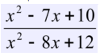

Задание 6
Создайте переменные str = "20" и a = 5. Проверьте каким будет результат следующих
операций. Объясните, как он получился.
Задание 7
Даны две переменных a="12" и b="7.15". Найдите остаток от деления числовых
значений переменной a на переменную b. Используйте функции преобразования
типов. Результатом должно быть число 5. Для округления числа следует
использовать метод Math.round().
Ответ на задание лежит в консоли
Задание 8
Вычислить значение выражения по формуле (все переменные принимают
вещественные значения):

Значение переменной можно задать в коде. Результат вывести на экран.
Ответ:
Задание 9
Проверить, содержит ли адрес электронной почты символ @, и выведите предупреждающее сообщение, если такого символа нет.